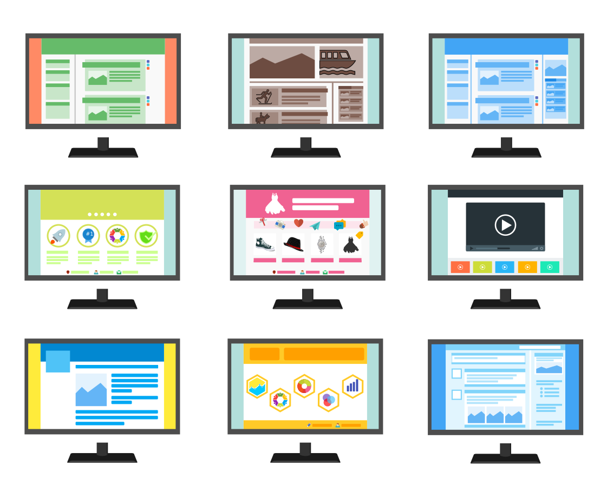
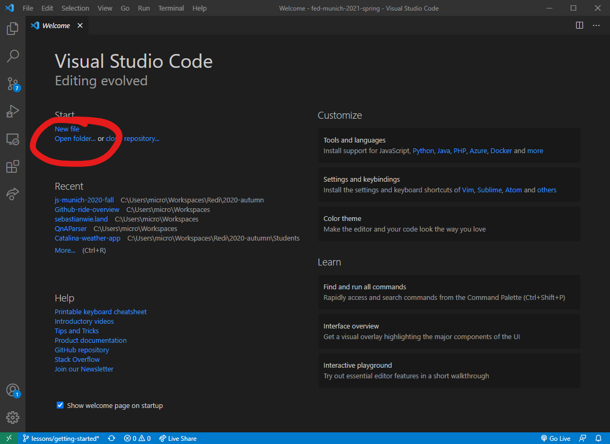
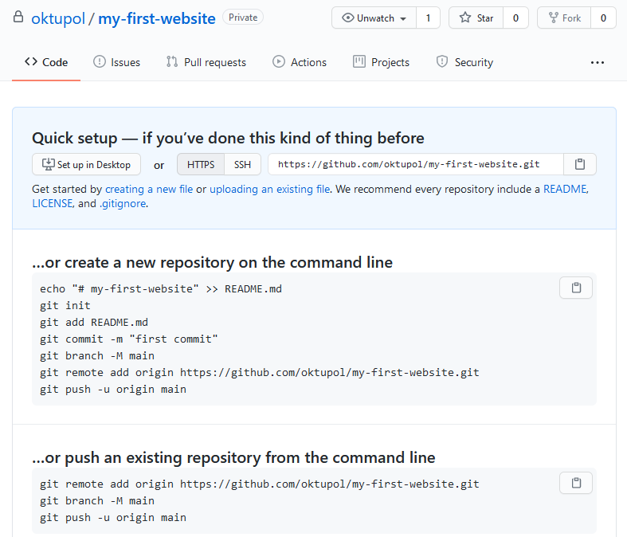
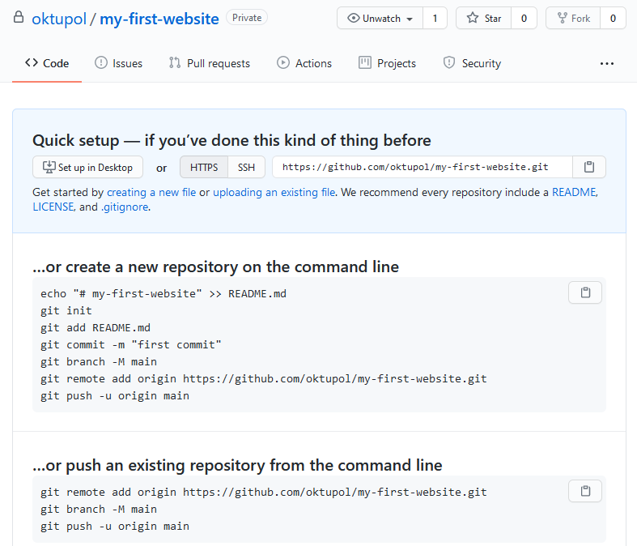

Welcome to
Frontend Development
ReDI School Munich - Spring 2021
Meet the teachers
-
Alena
-
Carine
-
Janka
-
João
-
Marjorie
-
Sebastian
Course expectations
What will you be able to do after finishing this course?
Course expectations
Creating and implementing beautiful designs
Course expectations
Making your website work on all devices

Course expectations
Making your application interactive
Course expectations
You won't (yet) be able to...
- Create a chat or anything related to communication
...because that would require a backend. - Make a video game
...because we won't go into graphics computing. - Create more complex single-page web applications
...because the tools we use are not suited for those.
Past projects
Past projects
Setting up the development environment
Setting up the development environment
Visual Studio Code
Git & Github
Visual Studio Code
- Download Visual Studio Code from code.visualstudio.com/download
- Run the installer, follow its instructions
- Open VS Code, and from there open or create a directory which serves as your workspace
Visual Studio Code
Visual Studio Code
For now we're done. We'll come back to Visual Studio Code at a later point toady.
Git and Github
Git and Github
What's the difference?
Git and Github
Git
- Software to manage repositories
- Repositories contain files and their complete history
- File history is stored in commits
Github
- Hosting and collaboration platform for git repositories
- Download and install Git from git-scm.com/downloads
- Create yourself an account on github.com
Our first website
- On Gitbub, create a new repository
- In your project directory, open a terminal window and type
git init - Then, make your github repository known to your local one
 

C:\Users\redi-user\my-first-website> git init
Initialized empty Git repository in C:/Users/redi-user/my-first-website/.git/
C:\Users\redi-user\my-first-website>
C:\Users\redi-user\my-first-website> git init
Initialized empty Git repository in C:/Users/redi-user/my-first-website/.git/
C:\Users\redi-user\my-first-website> git remote add origin https://github.com/my-username/my-first-website.git
C:\Users\redi-user\my-first-website>
What happened here?
git remote add creates the connection.C:\> git initCheat sheet with the most important git commands.
First contact with HTML
Create a new file called "index.html" in Visual Studio Code
We will dive deeper into HTML in the next lesson.
Committing our changes into Git
- Open the terminal again and type
git status - Now, add the newly created file to your commit with
git add - Commit the file with
git commit - Push the commit to Github with
git push
When viewing your repository on Github now, you should see yor newly committed file "index.html"
C:\Users\redi-user\my-first-website> git status
On branch master
No commits yet
Untracked files:
(use "git add <file>..." to include in what will be committed)
index.html
nothing added to commit but untracked files present (use "git add" to track)
C:\Users\redi-user\my-first-website>
C:\Users\redi-user\my-first-website> git add index.html
C:\Users\redi-user\my-first-website> git status
On branch master
No commits yet
Changes to be committed:
(use "git rm --cached <file>..." to unstage)
new file: index.html
C:\Users\redi-user\my-first-website>
C:\Users\redi-user\my-first-website> git commit -m 'initial commit'
[master (root-commit) c84dc34] initial commit
1 file changed, 10 insertions(+)
create mode 100644 index.html
C:\Users\redi-user\my-first-website>
C:\Users\redi-user\my-first-website> git push -u origin master
Enumerating objects: 3, done.
Counting objects: 100% (3/3), done.
Delta compression using up to 8 threads
Compressing objects: 100% (2/2), done.
Writing objects: 100% (3/3), 986 bytes | 986.00 KiB/s, done.
Total 3 (delta 0), reused 0 (delta 0), pack-reused 0
To github.com:redi-user/my-first-website.git
* [new branch] master -> master
Branch 'master' set up to track remote branch 'master' from 'origin'.
C:\Users\redi-user\my-first-website>
Homework workflow
All homework will be submitted into Github Classroom.
There, you will find the assignments as well as instructions on how to work with them.
Homework submission process
- Join the Github Classroom using your Github credentials.
- Then, accept the assignment, clone the repsoitory that was created for you.
git clonecreates a new directory and copies an existing repository into it. - The actual assignment is located inside the file README.md. Follow the instructions in there.
- Once done, commit and push your work. A teacher will review it now.
C:\Users\redi-user> git clone https://github.com/ReDI-Munich-Frontend/fed1-homework-getting-started-redi-user.git
Cloning into 'fed1-homework-getting-started-redi-user'...
remote: Enumerating objects: 7, done.
remote: Counting objects: 100% (7/7), done.
remote: Compressing objects: 100% (5/5), done.
remote: Total 7 (delta 0), reused 7 (delta 0), pack-reused 0
Receiving objects: 100% (7/7), done.
C:\Users\redi-user> cd fed1-homework-getting-started-redi-user
C:\Users\redi-user\fed1-homework-getting-started-redi-user>
Homework
Create a HTML file similar to the one we created today.
Upcoming topics
- HTML basics
Document structure and semantics, working with forms - CSS basics
CSS selectors, common CSS properties, inspecting elements